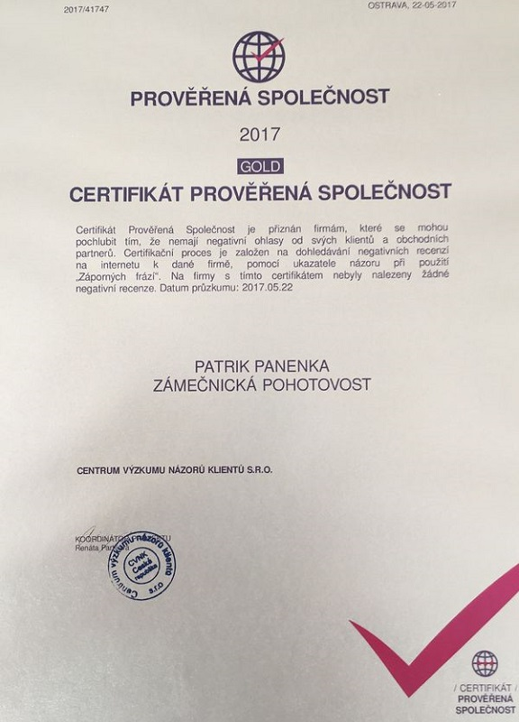
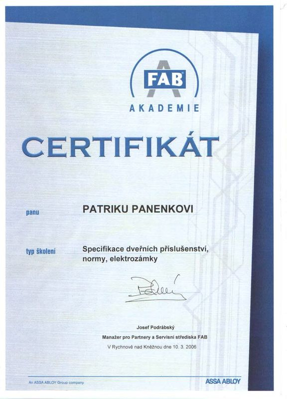
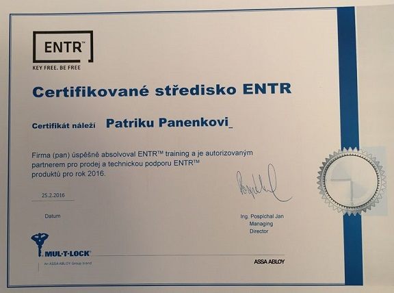

Nouzové otevírání zabouchnutých bytů, domů a aut, montáž bezpečnostních dveří FAB a MUL-T-LOCK, výměna zámkových vložek a servis elektronických zámků ENTR. Jezdím po celém Frýdecko-Místecku – od Sviadnova přes Frýdek-Místek až po Paskov a Brušperk.
Od nouzového zásahu u zabouchnutých dveří po kompletní montáž bezpečnostních dveří včetně zárubní. Vše na certifikovaných vložkách FAB a systémech MUL-T-LOCK.
Otevřu zabouchnutý byt, dům, chatu i auto bez zbytečného poškození zámku nebo dveří. Nejdřív zkouším šetrné metody, k vrtání vložky přistupuji až v krajním případě.
Montáž bezpečnostních dveří FAB a MUL-T-LOCK do bytových jader i rodinných domů, včetně zárubní. Poradím s výběrem bezpečnostní třídy podle pojistky a typu vstupu.
Výměna cylindrických vložek, bezpečnostního kování a celých zámkových systémů. Pracuji s vložkami s certifikovanou odolností proti vloupání a planžetování.
Montáž a servis elektronických zámků ENTR od MUL-T-LOCK – otevírání kartou, čipem nebo mobilem bez klíče. Jsem certifikované servisní středisko s technickou podporou výrobce.
Výroba klíčů k zámkům FAB, cylindrickým vložkám a bezpečnostním systémům, na počkání i na objednávku. Duplikáty i klíče se speciálním profilem.
Opravím uvolněné, zadrhávající nebo poškozené zámky u vstupních i vnitřních dveří. Prohlédnu funkčnost celého kování a doporučím, co má smysl vyměnit.
Zámečnickému řemeslu se věnuji dlouhodobě – jsem certifikovaný technik FAB Akademie na dveřní příslušenství, normy a elektrozámky a certifikované servisní středisko ENTR pro elektronické zámky MUL-T-LOCK. Zakázky řeším sám nebo s malým týmem, který dorazí na místo přesně v domluveném čase.


Certifikát FAB Akademie
Certifikované středisko ENTRZavoláte nebo napíšete přes formulář a popíšete, o co jde – zabouchnuté dveře, výměna vložky nebo nové bezpečnostní dveře.
U nouzového otevírání jedu rovnou na místo, u dveří a zámků přijedu změřit a navrhnu řešení s cenou.
Práci provedu v domluveném termínu, u zabouchnutých dveří obvykle do hodiny od zavolání.
Vysvětlím ovládání zámku nebo kování, předám klíče a doklady k výrobku a uklidím po sobě.
„Musím říct, že takhle hladce a rychle proběhlou výměnu dveří jsem ani nečekal. Kluci přijeli přesně na čas, všechno měli nachystané, žádné zbytečné řeči – rovnou se pustili do práce. Během chvilky bylo hotovo, po sobě uklidili a dveře sedí naprosto perfektně. Opravdu profesionální přístup a kvalitní provedení. Kéž by takhle fungovali všichni řemeslníci. Za mě naprostá spokojenost!“
„Naprostá spokojenost! Dvoje bezpečnostní dveře - kvalitně, rychle. Vstřícné jednání, cena odpovídající, rozhodně doporučujeme 👍.“
„Tým pana Panenky doporučuji. Výborná domluva a ochota vyjít vstříc zákazníkovi. Máme od nich bezpečnostní dveře do bytu včetně zárubní. Dveře krásně utlumily ruchy z chodby a výrazně zvýšily stupeň zabezpečení bytu.“
„Rychlá a opravdu profesionální pomoc s otevřením zabouchnutého bytu s klíčem z vnitřní strany. Perfektní přístup.“
Sídlím ve Sviadnově, odkud jezdím na zakázky i nouzové zásahy po celém okrese Frýdek-Místek. U nouzového otevírání dojezd obvykle do hodiny, u montáží dveří a zámků se termín domlouvá dopředu.
| Pondělí | 7:00–18:00 |
| Úterý | 7:00–18:00 |
| Středa | 7:00–18:00 |
| Čtvrtek | 7:00–18:00 |
| Pátek | 7:00–18:00 |
| Sobota | Zavřeno |
| Neděle | Zavřeno |
Cena závisí na typu zámku, době výjezdu a tom, jestli se zámek dá otevřít bez poškození nebo je potřeba vrtat vložku. Přesnou částku řeknu po telefonu, jakmile popíšete typ dveří a zámku.
V rámci Sviadnova a blízkého okolí Frýdku-Místku jedu obvykle do hodiny od zavolání. Mimo pracovní dobu záleží na aktuální vytíženosti, ozvěte se telefonicky a domluvíme se.
Záleží na podmínkách pojistky, poloze bytu a typu zámku, který k dveřím chcete. Probereme to na místě při zaměření a doporučím třídu odpovídající vašemu vstupu.
U většiny standardních zámků ano – použiji nedestruktivní metody otevírání. Pokud je zámek zablokovaný nebo poškozený zevnitř, může být nutné vyvrtat vložku, o čem vás předem upozorním.
Samotná montáž dveří včetně zárubně trvá obvykle jeden pracovní den. Před tím je potřeba zaměření na místě a objednání dveří podle rozměru dveřního otvoru.